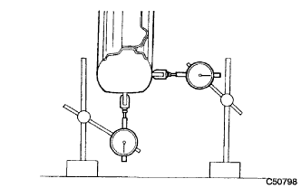
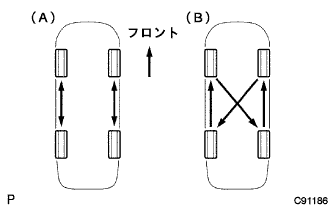
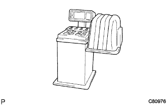
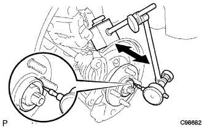
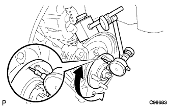

ホイール&タイヤ 点検 |
| 1. タイヤ点検 |
タイヤサイズおよび磨耗状況点検
タイヤ空気圧点検
| 仕様(タイヤサイズ) | 空気圧 (前輪·後輪) [kPa{kgf/cm2} ] |
| 175/70R14 84S | 220 {2.2} |
サスペンシヨンの改造や足廻り各部の損傷点検
|  |
タイヤの振れ点検
関係各部のボルトの締め付け状態点検
関係各部のガタ点検
| 2. タイヤ ローテーション |
|  |
方向性のある場合はA、方向性のない場合はBのようにタイヤのローテーシヨンを行う。
| 3. ホイール バランス点検 |
|  |
ホイールバランス (オフ ザ カーバランス)点検を行う。
ホイールバランス (オフ ザ カーバランス)調整を行う。
オフ ザ カーバランス調整を行ってもタイヤに振動などが生じる場合は、オン ザ カーバランス調整を行う。
| 4. フロントアクスル振れおよび軸方向のガタ点検 |
フロントタイヤ取りはずし
フロントブレーキディスクキャリパ切り離し(要領は参照)
フロントディスク取りはずし(要領は参照)
|  |
フロントアクスルハブベアリング軸方向のガタ点検
ダイヤルゲージをフロントアクスルハブの図の位置にセットし、ベアリングの軸方向のガタを点検する。
|  |
フロントアクスルハブ振れ点検
ダイヤルゲージをフロントアクスルハブの図の位置にセットし、ベアリングの振れを点検する。
フロントディスク取り付け(要領は参照)
フロントディスクブレーキキャリパ取り付け(要領は参照)
フロントタイヤ取り付け
| 5. リヤアクスル振れおよび軸方向のガタ点検 |
リヤタイヤ取りはずし
リヤブレーキドラム取りはずし
 |
リヤアクスルハブベアリング軸方向のガタ点検
ダイヤルゲージをリヤアクスルハブの図の位置にセットし、リヤアクスルハブベアリングの軸方向のガタを点検する。
リヤアクスルハブ振れ点検
ダイヤルゲージをリヤアクスルハブの図の位置にセットし、リヤアクスルハブの振れを点検する。
リヤブレーキドラム取り付け
リヤタイヤ取り付け